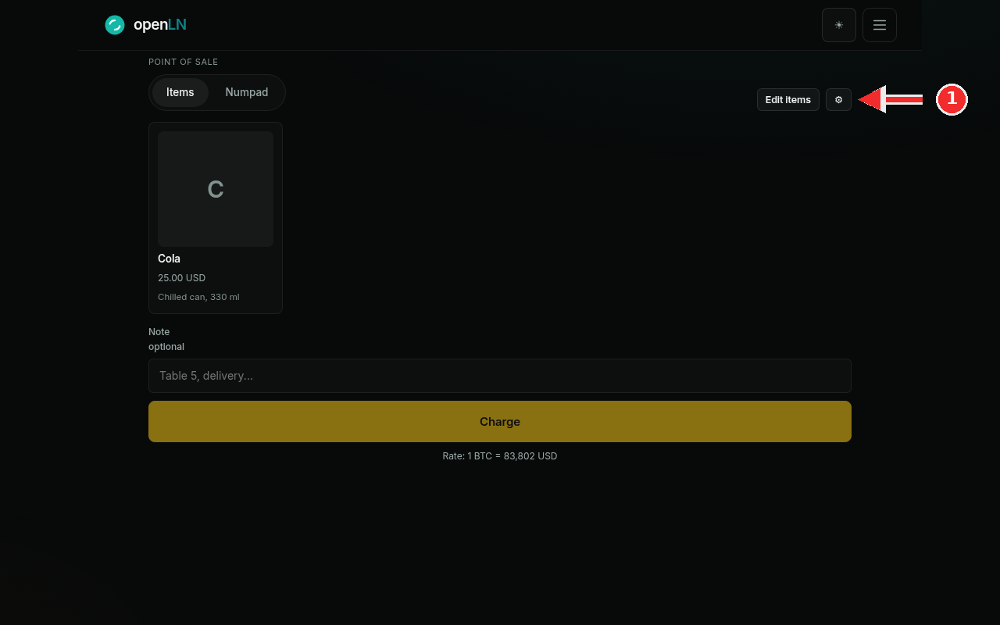
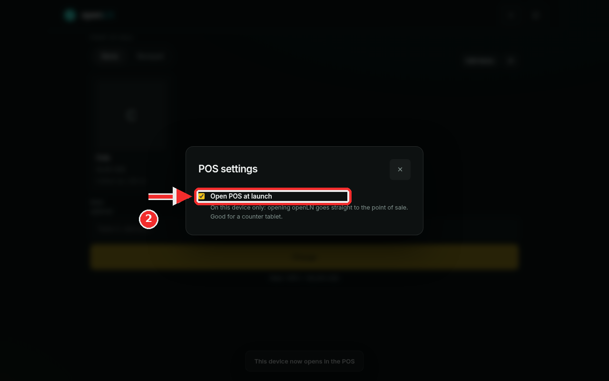

How to set up a counter tablet
A tablet left on the counter works best as a dedicated register: whoever picks it up taps the openLN icon and the point of sale is already on screen, ready for the next sale. openLN has one switch for exactly this. This guide shows where it lives and what it does. It takes about a minute, it touches this one device only, and it is easy to undo.
- You are signed in to your openLN account on the tablet that will sit on the counter.
- The POS view is open on that tablet: pick POS in the menu drawer, or tap the POS button on the Wallet screen.
- This guide changes one device: the tablet. Your phone and every other device keep opening the way they do today.
Open the POS view and press the settings gear
On the tablet, open the POS view. It opens on the Items tab, with your item grid below, the Note field, and the Charge button, the same register you already use. Now look at the top right of the POS view, in the row that holds the Items and Numpad tabs: just right of the Edit Items button sits a small gear button. To keep this tablet as a dedicated register, press that gear (marked in the screenshot). The gear is the settings button for the POS, and pressing it opens the dialog where the register setting lives, which is the next step. Nothing changes about your sale or your account by pressing it.

Turn on Open POS at launch
The POS settings dialog opens in the middle of the screen, with a cross in its corner to close it. It holds one setting: Open POS at launch, with a switch beside it. In the screenshot the switch is on and boxed in red. Turn it on. The line under the switch says what it does, in openLN's own words: "On this device only: opening openLN goes straight to the point of sale. Good for a counter tablet." In plain terms: from now on, whenever openLN is opened on this tablet, it skips the usual start on the wallet and lands straight in the POS, ready to ring up the next sale. A strip at the bottom of the screen confirms it right away: This device now opens in the POS. Close the dialog with the cross when the switch is set, and the tablet is ready for the counter.

- The setting is per device. Turning it on here makes this tablet, and only this tablet, open in the POS. The owner's phone still opens on the wallet as usual, and nothing changes anywhere else. Set it once on each device that should work as a register.
- You can turn it off any time. Open the same gear, press the Open POS at launch switch back off, and the tablet returns to the normal start on the wallet. Nothing else about the account changes.
- The rest of openLN is still there. Even with the setting on, the menu button at the top opens the wallet, books, and every other screen, so the tablet can do more than sell.
- Pair it with an install. For a counter tablet it is worth installing openLN as an app first: the home screen icon opens full screen, without the browser bar, which keeps the register clean. See how to install openLN on your device.